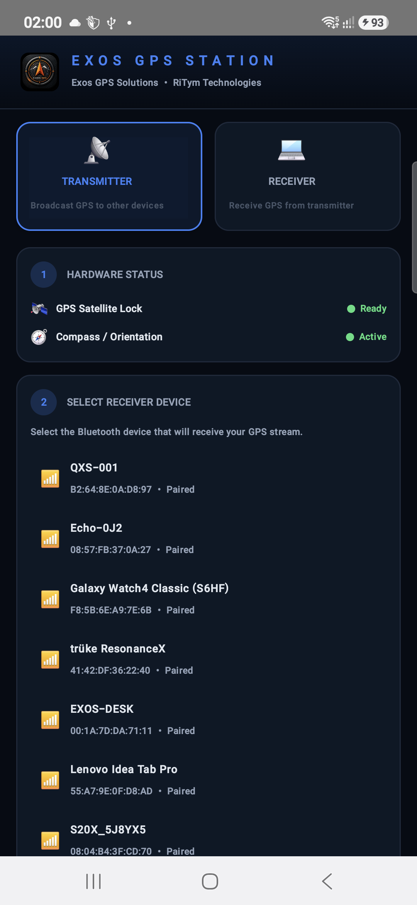
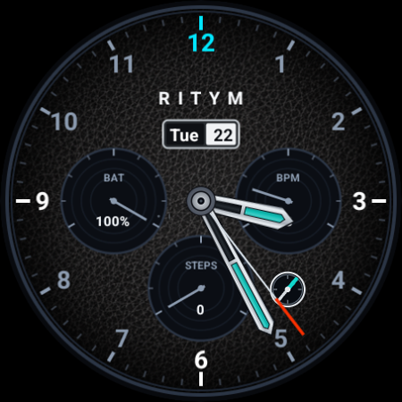
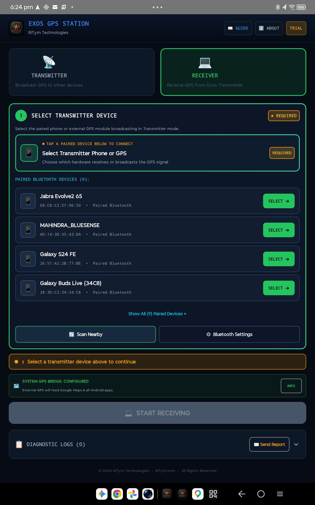
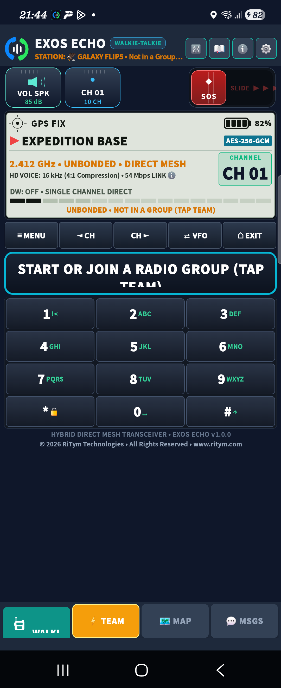
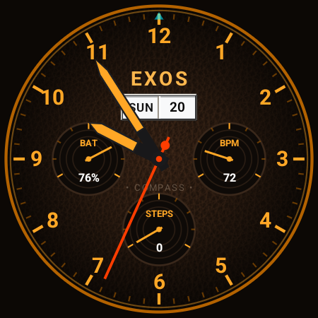

Engineered by RiTym Technologies for zero-connectivity environments. A complete hardware-integrated software ecosystem featuring Bluetooth GNSS Bridges, Offline Backcountry Topographic Mapping, Peer-to-Peer Mesh Walkie-Talkies, and Sensor-Fused Wear OS Chronographs.



Presented in their exact architectural sequence: bridging satellite coordinates, navigating off-grid terrain, coordinating teams over mesh radio, and monitoring heading on your wrist.
Bluetooth GNSS/GPS transmitter, receiver bridge, and telemetry station. Streams raw NMEA sentences over Bluetooth SPP/BLE and injects satellite fixes into Android via Mock Location.
Standalone backcountry navigation with offline vector topo maps, MGRS/UTM military grid references, trail breadcrumb recording, and reverse backtrack guidance.
Off-grid digital walkie-talkie connecting Android devices over Wi-Fi Direct and BLE mesh with low-latency push-to-talk voice, offline text chat, and distress beacons.
Precision Wear OS analog chronograph watch face paired with an instant 3D tilt-compensated compass companion, dual color themes (Obsidian Teal & Heritage Orange), and ultra-low-power AOD.
EXOS GPS Transceiver is a high-precision GNSS positioning and Bluetooth serial bridge suite engineered by RiTym Technologies. It transforms your Android device into a standalone satellite GPS transmitter or external Bluetooth receiver, feeding standard NMEA coordinates into third-party mapping software.

A standalone offline navigation instrument engineered for zero-connectivity wilderness environments. With locally rendered vector topographic maps, military grid referencing, and reverse backtrack tracking, EXOS Wayfinder guides you safely without reliance on cellular coverage.

An off-grid digital walkie-talkie and wilderness mesh transceiver connecting Android devices directly over Wi-Fi Direct and Bluetooth Low Energy. EXOS ECHO delivers low-latency digital voice and text communications where cellular coverage does not exist.

Exos Watchout pairs a high-altitude Swiss chronograph aesthetic with an expedition-grade 3D outdoor compass engine for Wear OS smartwatches. Designed for clean wrist orientation, it combines an official Google Watch Face Format (WFF v1) dial with seamless companion sensor telemetry.

Rigorous technical specifications across all four EXOS software platforms and the parent RiTym ESP32 hardware station.
| Parameter | 1. EXOS Transceiver | 2. EXOS Wayfinder | 3. EXOS ECHO | 4. Exos Watchout |
|---|---|---|---|---|
| Primary Function | Bluetooth GNSS Bridge & Mock Location | Standalone Offline Topo Navigation | Peer-to-Peer Mesh Walkie-Talkie | Wear OS Chronograph & 3D Compass |
| Target Platforms | Android 8.0+ & Windows 10/11 | Android 8.0+ (Handheld & Tablet) | Android 8.0+ (Handheld & Tablet) | Wear OS 4 & 5 (API 33+) |
| Wireless Protocol | Bluetooth Classic SPP & BLE NUS | BLE Peer Radar Beacons | Wi-Fi Direct & BLE Mesh | Bluetooth 5.0 Sensor Link |
| Data Payload / Standards | NMEA 0183 (RMC, GGA, VTG, HDT) | MGRS, UTM, GPX 1.1, GeoJSON | Opus Audio, Encrypted Packets | Google Watch Face Format (WFF v1) |
| Third-Party Integration | Google Maps, OsmAnd, Waze, ATAK, OpenCPN | Standalone Native Vector Engine | Decentralized Standalone Mesh | Wear OS Complications & Companion |
| Cloud Requirement | 0% (Strictly Local RFCOMM) | 0% (100% Offline Vector Maps) | 0% (Peer-to-Peer Mesh) | 0% (On-Watch Sensor Processing) |
| Package Identifier | com.ritym.exosgps | com.exos.wayfinder | P2P Audio Mesh Engine | exos.ritym.watchout.watchface |
Direct Google Play Store links, beta testing invitations, and engineering resources for all platforms.
Install the Bluetooth GNSS bridge and mock location service on your Android smartphone or field tablet.
Download the standalone offline navigation suite with vector topo mapping, MGRS grids, and trail backtrack.
Install the official Watch Face Format (WFF v1) chronograph dial and 3D compass companion on your Wear OS watch.